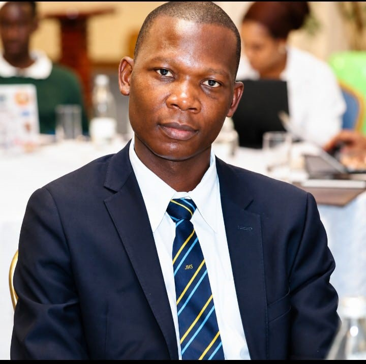

Line 01
Plastic → Pavement tiles
Shredded plastic offcut, pressed into durable tiles sold to construction firms and estate developers.
Kwa Njenga · Embakasi South · Nairobi
A youth-run production hub that turns Nairobi's industrial offcut and household waste into pavement tiles, briquettes, and bags — and turns the young people who make them into business owners.
The opportunity
Kwa Njenga sits directly beside Nairobi's industrial zone, generating a steady supply of plastic, textile, and organic offcut waste. The settlement itself has no formal solid-waste system, which means that same waste blocks drainage, floods homes, and spreads disease instead of being put to use.
It also has a very large, young population with high informal-sector employment and little access to capital or structured business support. Few locations combine raw material, labour, and unmet demand this closely — it's an ecosystem waiting for organisation, not a resource gap.
The model
Each line is run by a trained youth team with its own books, sharing one roof, one brand, and one buyer network.
Line 01
Shredded plastic offcut, pressed into durable tiles sold to construction firms and estate developers.
Line 02
Household and market organic waste, converted into clean-burning fuel briquettes and soil compost.
Line 03
Fabric scrap from nearby garment and industrial units, cut and sewn into market and retail bags.
How it comes together
01
Partnerships with nearby manufacturers for offcut feedstock, a local community organisation such as Muungano wa Wanavijiji for trust and access, and a university engineering department for materials R&D.
02
Three enterprises sharing one facility, logistics chain, and buyer network — each with its own organisational design and financial structure, built to stand on its own.
03
Staged, milestone-based capital: seed for equipment and setup, growth for working capital and stipends, scale for a second line — each tranche unlocked by hitting the last one's target.
Impact
Where we are

Founder
Founder & Data Lead, Kwa Njenga Circular Economy & Enterprise Hub
Okhala is a final-year Applied Statistics with Information Technology student (BSc, expected December 2026) with hands-on experience turning raw, real-world data into decision-ready insight. He completed a three-month research attachment at the Public Benefit Organizations Regulatory Authority, where he ran statistical analysis end-to-end — data collection, cleaning, analysis, and reporting — and built digital data-collection tools in KoboToolbox for field teams.
He also runs an independent statistics tutoring practice, teaching applied statistics to university and high-school students. He brings that same data-first discipline to this project: measuring waste tonnage diverted, tracking enterprise revenue by line, and reporting progress against milestones.
Get in touch
Open to funding partners, industrial feedstock partners, and community organisations ready to build this with us.